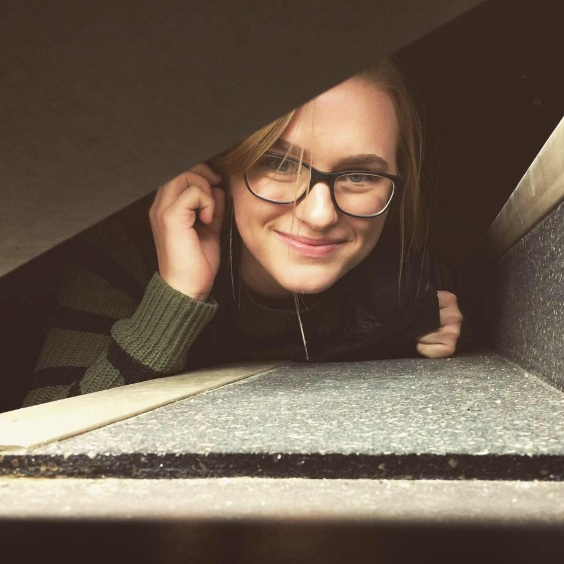
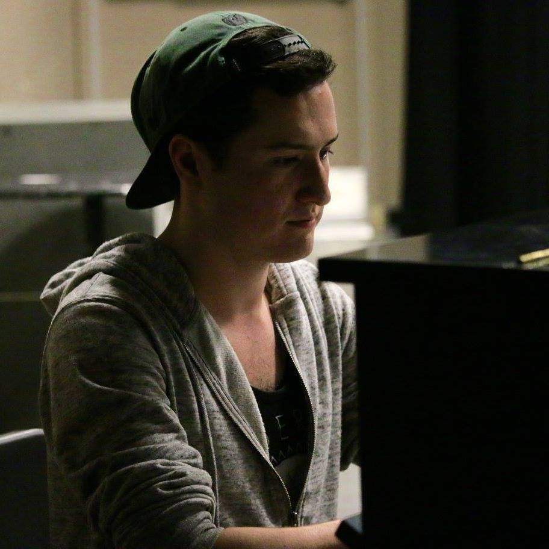
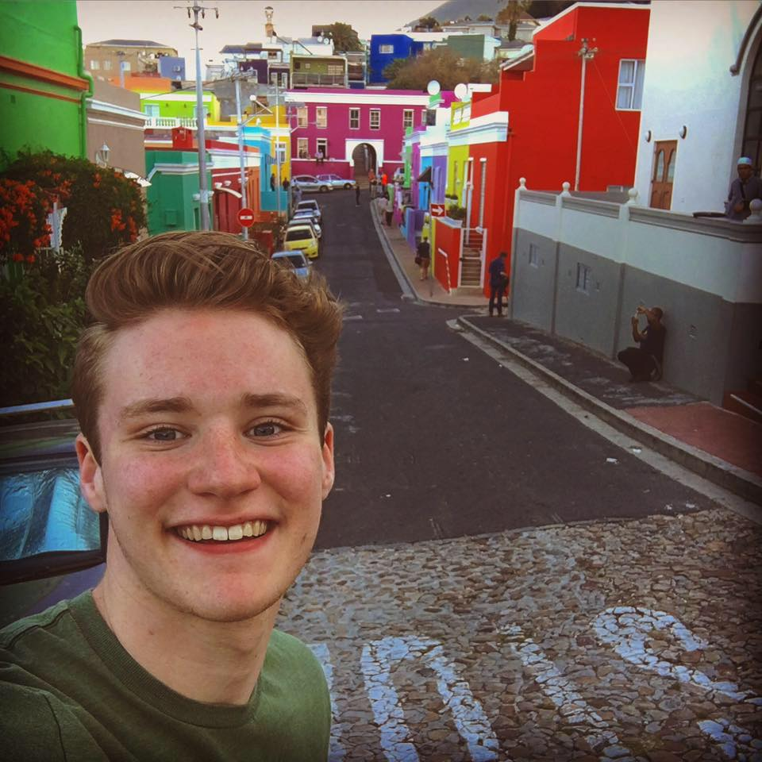
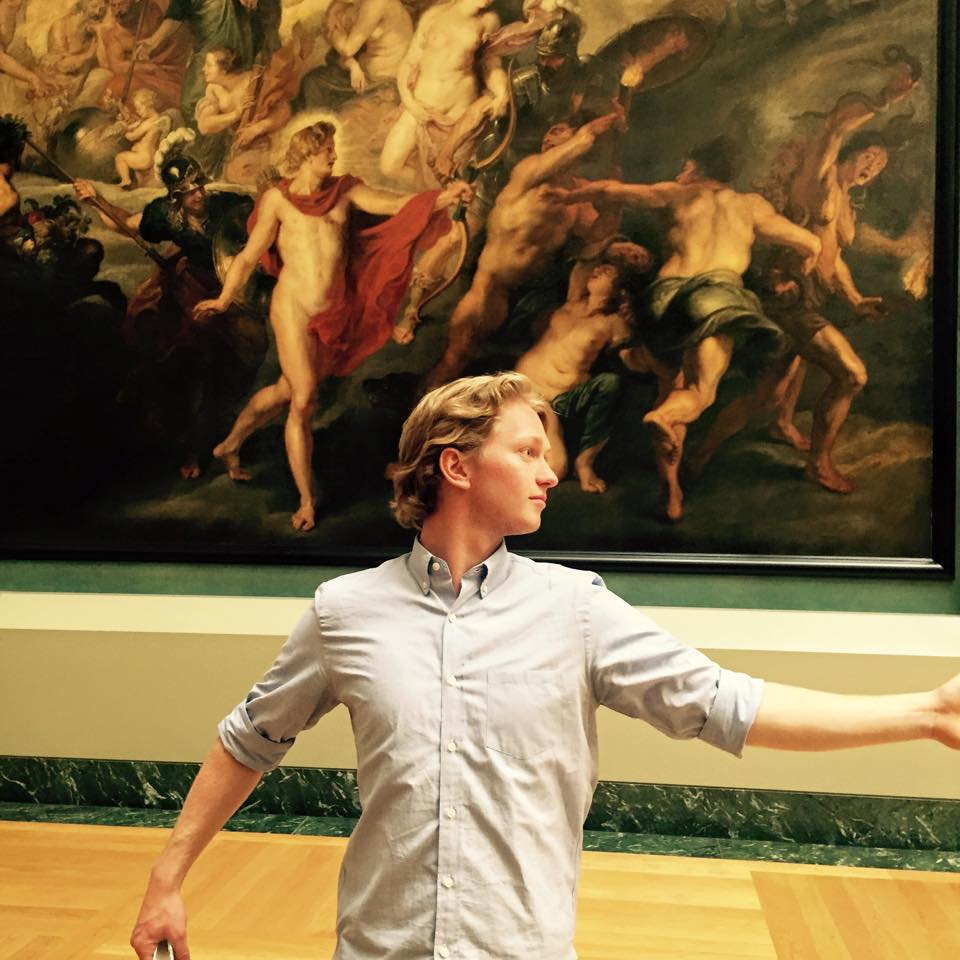
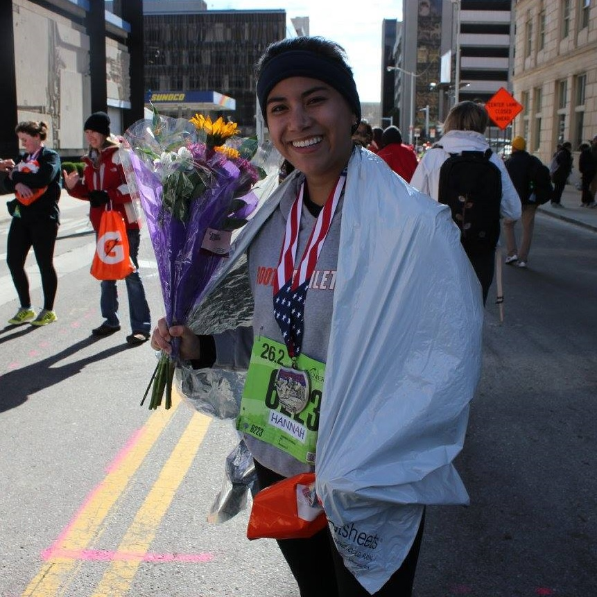
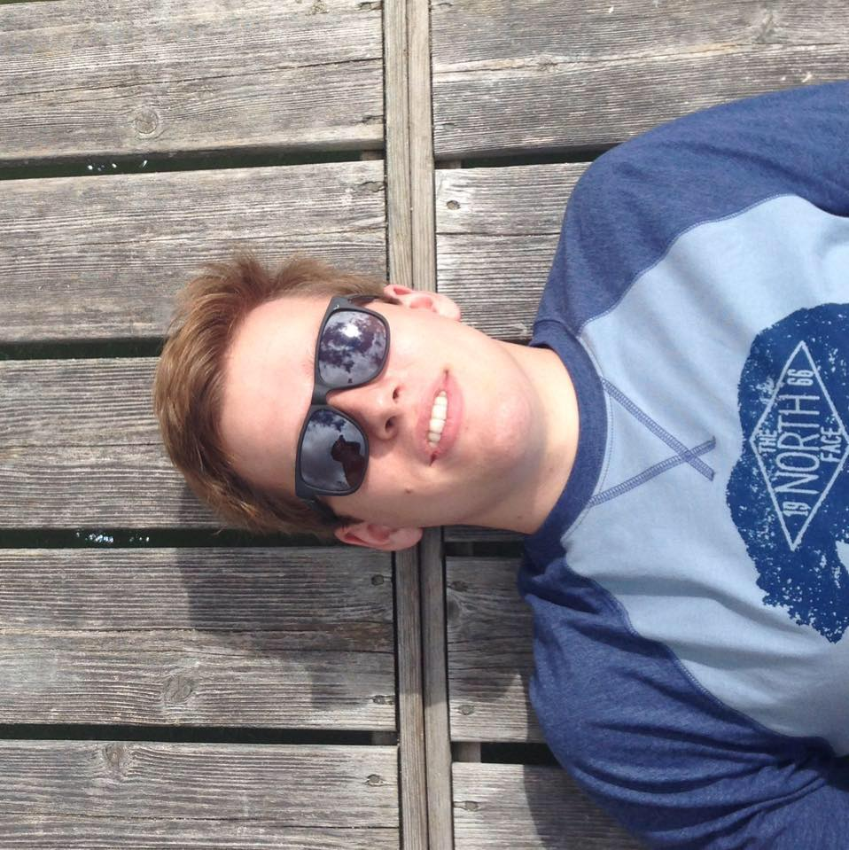

Meet the Lyres!

Sierra Bain
Alto | Sport Management '17
Sierra is a junior this year, and cannot believe she is already an upperclassmen, but time flies when you're in an a capella group, am I right? Speaking of flying, Sierra is from a small town called Haslett, Michigan, which is just east of Spartan territory and has nothing to do with flying.
Andrew Callahan
Baritone | Piano Performance '17
Andrew can really tickle those ivories.

Kelly Christensen
Soprano | English '16
This is Kelly's fourth and final year as a Lyre, and she is honored to serve as President over their domain for the 2015-2016 school year. HAILing all the way from Orange County, California, Kelly found her family away from home in this group. She is self-proclaimed group mom, so if you ever need a snack or an extra jacket, Kelly will have an assortment to choose from. In all seriousness, she loves these people, and is so thankful to wear the lyre for one more year.
George Davidson
Tenor | Political Science '19
George is a freshman from Haslett, MI. He only joined the group for this biography - everything else is irrelevant. George enjoys telling as many people as he can about having two moms to the point where it becomes obnoxious.


Sawyer Denton
Tenor | Music Composition '19
Continually fascinated by the puzzle that is music, Sawyer is a nonstop music nerd, and active composer. He aspires to be a film composer and orchestral conductor. Should this fail, Sawyer plans to return home to the streets of Chicago to pursue a career as an amateur boxer.
Jenna Funsten
Soprano | International Studies & Women's Studies '17
The only thing Jenna loves more than singing is cats.
Evan Kolm
Baritenor | Economics & Music '18
Evan hails from the big bay out Californiway.
Jordan McKay
Tenor/Vocal Percussion | Complex Systems '17
Jordan plays both real drums and mouth drums.


Francesca Napolitano
Soprano | Voice Performance '19
Francesca is a freshman and is very excited to be in her first year as a Lyre! Born and raised in Boston, she finds Midwestern accents unsettling but will eventually get over it. In her spare time, Francesca can be found studying lyrics to Kesha songs, singing high notes against her will, and perfecting her Alanis Morissette impression.
Becca Polinsky
Alto | Spanish & International Studies '19
Becca only auditioned for the Compulsive Lyres.

Anna Prenzler
Soprano | Business '17
Hailing from Bloomington, Illinois, Anna is a junior studying business with a minor in writing and is #blessed to be back with the Lyres for a second year. Outside of Lyres she works as a tour guide and is a part of Alpha Chi Omega, but most importantly, she brings the sass of her long lost twin Poot Prenzler to the group dynamic.
Alex Quinlan
Bass | Computer Science '16
Alex made this site instead of doing his homework.

Billy Sefton
Tenor | Choral Education '17
Billy 'Manbun' Sefton is Music Director this year.
Hannah Shuman
Alto | Biomolecular Science & German '18
After successfully surviving her freshman year, Hannah is excited for another two semesters of fun and games with the Lyres. When she isn't lost, Hannah is studying, playing the piano, writing songs, or running. She can't wait for another year of singing, not singing, learning choreo, and failing at the choreo. Lyre up!


Trevor de Sibour
Tenor | Biomolecular Science '18
Trevor is incredibly excited for his second year of Lyres! As a sophomore, he is still trying to figure out the whole pre-med thing and considers Grey's Anatomy a valuable asset to his educational enrichment. In his free time, you can find him ~sexually~ experimenting with various spice levels at No Thai, self-consciously sleeping in the UGLi, or aggressively listening to Christmas music.
Brendan Stafford
Bass | Political Science '16
Brendan already has a job offer so he's pretty much checked out.
Addison Thalhamer
Baritone | Mechanical Engineering '16
Addison can't decide where he loves to spend time more, with the Men's Glee Club or with the Lyres.